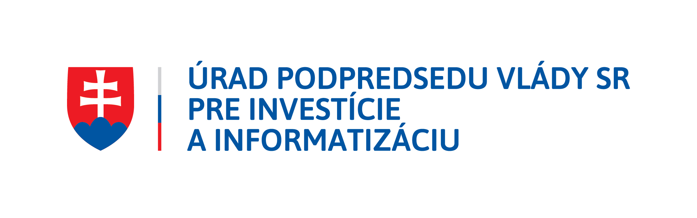

Business support
Innovation of the production process in wood production
Efficient use of wood material by introducing production of dry beams, edge-glued boards and wood briquettes
Implemented with financial support from the Office of the Deputy Prime Minister of the Slovak Republic for Investments and Informatization – programme Support of the Least Developed Districts.
The project is financed thanks to financial support from the European Regional Development Fund.
| Project activity | Support for business in agriculture – procurement of technologies and other expenses related to the project implementation |
|---|---|
| Beneficiary | Mlat s.r.o., Lipová 275/38, 985 26 Málinec, Slovakia |
| Place of implementation | Region (NUTS II): Central Slovakia · Higher territorial unit (NUTS III): Banská Bystrica Region · District (NUTS IV): Poltár · Municipality: Málinec |
| Non-repayable financial contribution | EUR 176,263 |
| Implementation period | 6/2018 – 1/2019 |
Project description
The aim of the project is to increase the company's competitiveness by purchasing new technology for its wood-production plant. The technology comprises a horizontal log band saw, a profiling and planing moulder, a wood-chip boiler, a hot-air drying kiln and a briquetting press.
This technology enables the company to expand production with new products (dry boards, beams, prisms) while also using wood waste to make edge-glued boards and wood briquettes. The project delivers both product innovation and process innovation.
The new technology increased production volume, labour productivity, production efficiency and added value. New products (dry beams, prisms, edge-glued boards and wood briquettes) were introduced to the market, and the company created 4 new jobs for people from disadvantaged social groups.
Project updates
The main project activity began in 6/2018, after the public procurement process had been carried out and checked and a contract had been signed with the winning bidder for the supply of the horizontal log band saw. It was completed on 11 January 2019 with the delivery of the last technology unit – the biomass boiler.
All machines and equipment were delivered in line with the delivery terms of the signed purchase contracts, invoiced, and handed over to Mlat s.r.o. After delivery they were added to the company's assets, installed, and production started. By the end of the project, 4 new jobs had been created and filled by people from disadvantaged groups. With the new technology units, the company began producing three new kinds of products – briquettes, dry beams and edge-glued boards.
All technology units were purchased gradually from the contribution under the grant agreement, by way of pre-financing and an advance payment. Co-financing was provided from Mlat s.r.o.'s own resources.
Mlat s.r.o. continues its activities today, uses the purchased technology and produces the declared products. The company has invested in further equipment and is expanding its production capacity.
Further information
